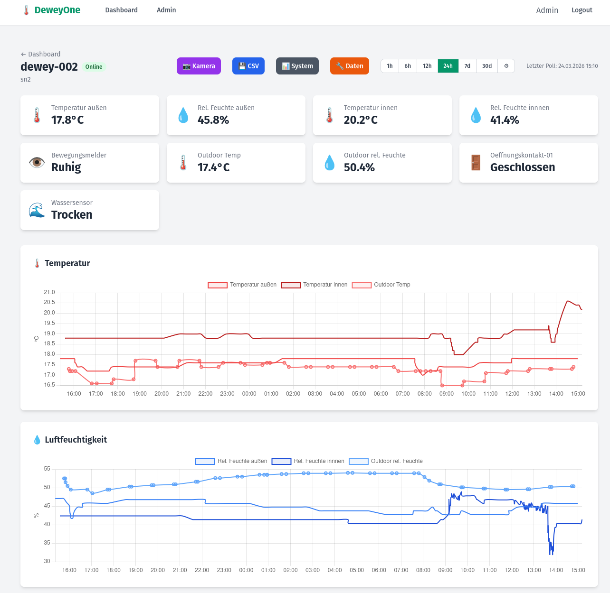

Das Monitoring-System
Sensoren · Robotik · Alarmierung
Dashboard

Echtzeit-Dashboard · Sensorwerte · Historische Verläufe
Das Dashboard zeigt alle Sensorwerte in Echtzeit, historische Verläufe und den Status aller Einheiten. Die integrierte RGB-Kamera ermöglicht visuelle Inspektion bei Alarm — ohne vor Ort zu sein. Die optional integrierte Wärmebildkamera dient der thermografischen Überwachung von Heizungen, Wärmebrücken und Innenwänden. Daten können jederzeit als CSV exportiert werden.
Robotik-Plattformen
Stationäre Sensoren messen kontinuierlich. Bei Alarm wird der Rover remote gesteuert zur Quelle gefahren, dokumentiert mit der RGB-Kamera und liefert das Bild ans Dashboard. Autonome Navigation folgt mit LiDAR-Ausbau.
Sensoren
| Parameter | Einsatz | Alarm bei |
|---|---|---|
| Wassersensor | Leckagen, Rohrbrüche | Kontakt mit Wasser |
| Temperatur | Frostschutz, Heizungsausfall | Konfigurierbarer Schwellwert |
| Luftfeuchtigkeit | Schimmelrisiko, Taupunkt | Schwellwert oder Risikomodell |
| CO₂ EPBD IEQ | Luftqualität, Lüftungsbedarf | Konfigurierbarer Schwellwert |
| VOC EPBD IEQ | Schadstoffbelastung | Konfigurierbarer Schwellwert |
| Tür-/Fensterkontakt | Einbruch, unbefugter Zutritt | Öffnung außerhalb Zeitfenster |
| Bewegungsmelder | Unbefugter Aufenthalt | Bewegung außerhalb Zeitfenster |
| Kamera (RGB) | Visuelle Dokumentation | Auf Abruf oder bei Bewegung |
| Wärmebildkamera | Thermografie, Wärmebrücken | Auf Abruf |
Kompatible Protokolle: Zigbee, Z-Wave und weitere. Kein proprietäres Ökosystem — Sensoren verschiedener Hersteller kombinierbar.
Alarmierung
- Alarm per E-Mail — sofort bei Schwellwertüberschreitung
- Alarm per Messenger — an konfigurierbare Empfänger
- Eskalationskette konfigurierbar: wer wird wann informiert
- Rover-Verifikation: bei Alarm fährt die mobile Einheit zur Quelle
- Incident Management System — lückenlose Dokumentation aller Ereignisse
So läuft es ab
-
Begehung & Planung Wir schauen uns das Gebäude an, besprechen Anforderungen und legen gemeinsam fest was gemessen werden soll.
-
Installation & Konfiguration Sensortechnik wird installiert und konfiguriert. Keine IT-Infrastruktur auf Ihrer Seite nötig — die Einheit läuft autark.
-
Inbetriebnahme Alarmregeln werden gemeinsam definiert: Schwellwerte, Empfänger, Zeitfenster, Eskalationskette.
-
Laufender Betrieb Wir überwachen den Systembetrieb, aktualisieren die Software und sind Ansprechpartner. Sie bekommen ein System das mitwächst.
Klingt das nach eurem Gebäude?
Schreibt uns — wir melden uns.
Gespräch anfragenpilot@buildingsandphotons.de · Buildings & Photons · Esslingen am Neckar